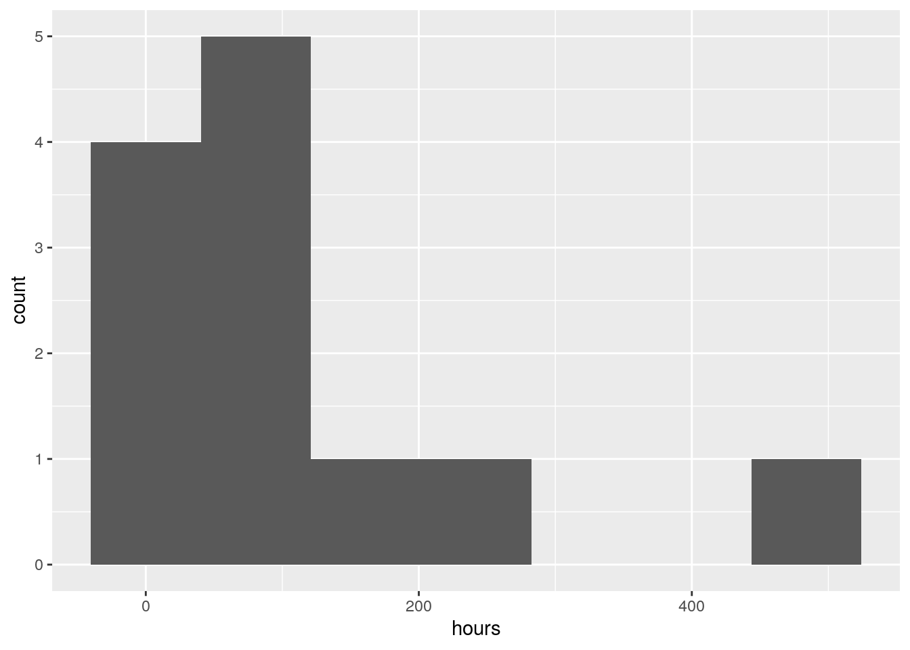
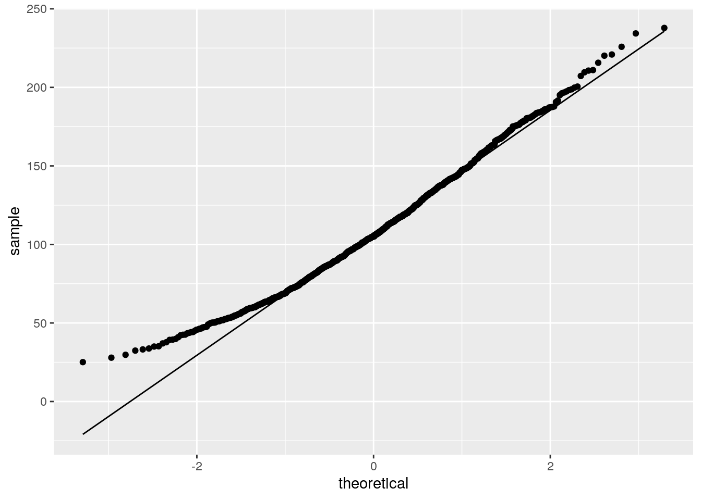
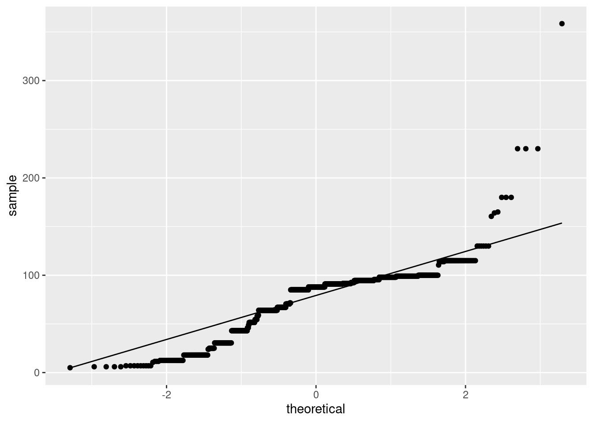
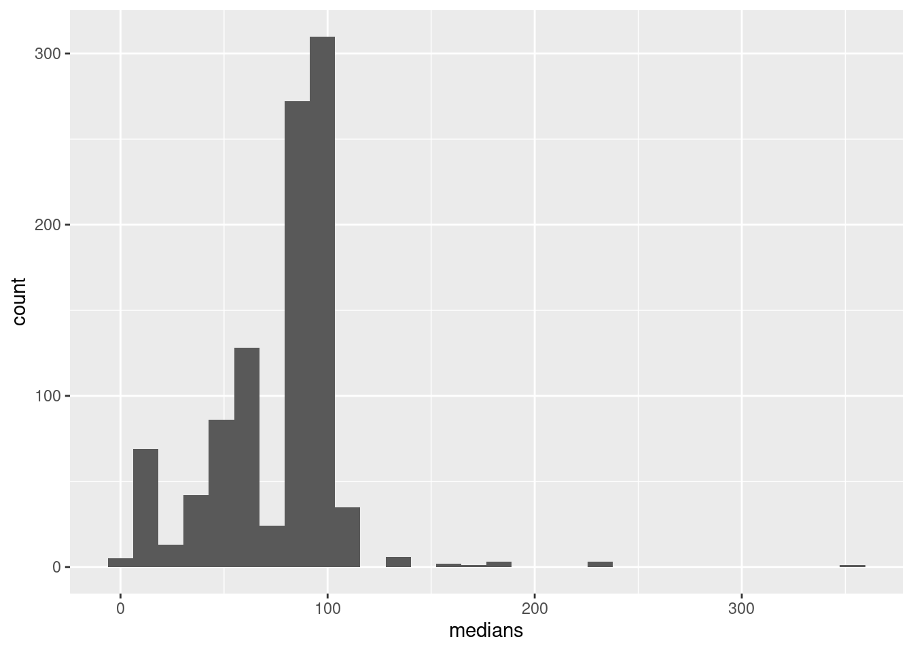

Chapter 17 The Bootstrap
Packages for this chapter:
17.1 Air conditioning failures
Back in 1963, there was a report on failures in air-conditioning equipment in aircraft. For one aircraft, the air-conditioning equipment failed 12 times, and the number of hours it ran before failing each time was recorded. The data are in link. Boeing was interested in the mean failure time, because the company wanted to plan for engineers to fix the failures (and thus needed to estimate a failure rate).
There is randomization here. Your answers will differ slightly from mine, unless you throw in this before you start (or at least before you generate your first random numbers).
- Read in the data, and observe that you have the correct number of rows. (Note that the failure times are in ascending order).
Solution
This is a .csv so read_csv is the thing:
my_url <- "https://raw.githubusercontent.com/nxskok/pasias/master/air_conditioning.csv"
aircon <- read_csv(my_url)## Parsed with column specification:
## cols(
## failure = col_double(),
## hours = col_double()
## )## # A tibble: 12 x 2
## failure hours
## <dbl> <dbl>
## 1 1 3
## 2 2 5
## 3 3 7
## 4 4 18
## 5 5 43
## 6 6 85
## 7 7 91
## 8 8 98
## 9 9 100
## 10 10 130
## 11 11 230
## 12 12 487Twelve rows (12 failure times).
- What do you notice about the shape of the distribution of failure times? Explain briefly.
Solution
Make a suitable graph. The obvious one is a histogram:

You’ll have to play with the number of bins (there are only 12 observations). I got 7 from the Freedman-Diaconis rule:
## [1] 7I was a little suspicious that the data would not be much like normal (I have run into failure times before), so I kept away from the Sturges rule.
Another possibility is a one-group boxplot:

If you like, you can do a normal quantile plot. I rank that third here, because there is nothing immediately implying a comparison with the normal distribution, but I would accept it:

Pick a visual and defend it.
All three of these graphs are showing a strong skewness to the right.
Extra: this is probably not a surprise, because a time until failure cannot be less than zero, and distributions with a limit tend to be skewed away from that limit. (If you look back at the data, there are some very small failure times, but there are also some very big ones. The very small ones are saying that the lower limit matters.) If you were modelling these times until failure, you might use a distribution like the exponential or gamma or Weibull.
- Obtain the means of 1000 bootstrap samples (that is, samples from the data with replacement). Save them.
Solution
Something like this, therefore:
I often start with rerun(1000), closing the bracket, and then wonder
why it doesn’t work. In the rerun, you have to say two things: how
many times to rerun, and what to rerun. So don’t close the bracket
on the rerun until you’ve done that.
- Make a normal quantile plot of your bootstrap distribution. What do you see? Explain briefly.
Solution
This:

This is still skewed to the right (it has a curved shape, or, the low values and the high values are both too high compared to the normal).
Extra: this is less skewed than the original data was, because, with a sample size of 12, we have a little help from the Central Limit Theorem, but not much. This picture is the one that has to be normal enough for \(t\) procedures to work, and it is not. This comes back into the picture when we compare our confidence intervals later.
Also, it makes sense to see how normal a sampling distribution of a mean is, so a normal quantile plot would be my first choice for this.
- Obtain the 95% bootstrap percentile confidence interval for the mean.
Solution
This is the 2.5 and 97.5 percentiles of the bootstrapped sampling distribution of the mean:
## 2.5% 97.5%
## 46.49583 186.00417- Obtain the 95% bootstrap-\(t\) confidence interval for the mean, and compare your two intervals.
Solution
The key is to remember that the original sample (and thus each bootstrap sample) had \(n=12\), so there are \(12-1=11\) df. (The fact that there were 1000 bootstrap samples is neither here nor there). This is how I like to do it:
## [1] 2.200985## [1] 26.11472 191.30628The c(-1, 1) thing is the calculation version of the \(\pm\),
and gets both limits at once. Pull the above apart to see how it works. If
you don’t like that, you might prefer something like this:
## [1] 26.11472## [1] 191.3063I apologize for the crazy first line of that! As for comparison: the bootstrap-\(t\) interval goes down a lot further, though the upper limits are quite similar (on this scale). Both intervals are very long and don’t tell us much about the population mean time to failure, which is not very surprising given the small sample size (\(n=12\)) and the large variability in the data.
Extra: the non-normality of the bootstrap (sampling) distribution says that we should definitely not trust the bootstrap-\(t\), and probably not the bootstrap percentile interval either. Which brings us to the next part.
- Obtain the BCa 95% confidence interval for the mean.
Solution
This means (possibly) installing and (certainly) loading the bootstrap package, and then:
theta <- function(x) {
mean(x)
}
bca_all <- with(aircon, bcanon(hours, 1000, theta))
bca <- bca_all$confpoints
bca## alpha bca point
## [1,] 0.025 60.00000
## [2,] 0.050 66.58333
## [3,] 0.100 73.91667
## [4,] 0.160 81.50000
## [5,] 0.840 173.75000
## [6,] 0.900 186.58333
## [7,] 0.950 210.33333
## [8,] 0.975 248.25000Pull out the ones from this that you need: the top one and the bottom one, to get an interval of 60 to 248.2.
I seem to need to define the function theta first and pass it into bcanon as the third input. You may have more luck with bcanon(hours, 1000, mean) than I did. Try it.
Or, if you feel like some extra coding: turn this matrix into a data frame, grab the rows you want, and then the column you want:
## [1] 60.00 248.25- Compare the BCa confidence interval with the other ones. Which one would you recommend? Explain briefly.
Solution
In this example, the bootstrap-\(t\) and percentile intervals are very different, so we should use neither of them, and prefer the BCa interval.
Extra: as usual in this kind of case, the BCa contains values for the mean pulled out into the long tail, but that’s a proper adjustment for the sampling distribution being skewed.
17.2 Air conditioning failures: bootstrapping the median
With a skewed data distribution such as the air-conditioning
failure times, we might be interested in inference for the median. One
way to get a confidence interval for the median is to invert the sign
test, as in smmr, but another way is to obtain a bootstrap
sampling distribution for the median. How do these approaches compare
for the air-conditioning data? We explore this here.
- Read in the air-conditioning data again (if you don’t already have it lying around). The link is in the previous question.
Solution
my_url <- "https://raw.githubusercontent.com/nxskok/pasias/master/air_conditioning.csv"
aircon <- read_csv(my_url)## Parsed with column specification:
## cols(
## failure = col_double(),
## hours = col_double()
## )## # A tibble: 12 x 2
## failure hours
## <dbl> <dbl>
## 1 1 3
## 2 2 5
## 3 3 7
## 4 4 18
## 5 5 43
## 6 6 85
## 7 7 91
## 8 8 98
## 9 9 100
## 10 10 130
## 11 11 230
## 12 12 487- Use
smmrto get a confidence interval for the median (based on the sign test).
Solution
Input to ci_median is data frame and column:
## [1] 7.002319 129.998291- Obtain the bootstrap distribution of the sample median. Make a normal quantile plot of it. What do you notice? Explain briefly.
Solution
The usual do-it-yourself bootstrap:
I actually copied and pasted my code from the previous problem, changing mean to median.
As for a plot, well, this:

Not only does this not look very normal, but also there are those curious horizontal patches of points (that, you might recall, are characteristic of a discrete distribution). This has happened because there are only a few possible medians: the median has to be either a data value or halfway between two data values, so there are only something like \(2(12)-1=23\) different possible medians, with the ones in the middle being more likely.
This also shows up on a histogram, but only if you have enough bins. (If you don’t have enough bins, some of the neighbouring possible values end up in the same bin; here, the aim is to have enough bins to show the discreteness, rather than the usual thing of having few enough bins to show the shape.)

- Obtain a 95% bootstrap percentile confidence interval for the median. How does it compare with the one you obtained earlier?
Solution
Also, the usual:
## 2.5% 97.5%
## 12.5 115.0This goes down and up not quite so far as the interval from smmr. That might be because the smmr interval is too wide (based on a not-very-powerful test), or because the bootstrap quantile interval is too narrow (as it usually is). It’s hard to tell which it is.
- Obtain a 95% BCa interval. Compare it with the two other intervals you found.
Solution
Yet more copying and pasting (from the previous question):
theta <- function(x) {
median(x)
}
bca_all <- with(aircon, bcanon(hours, 1000, theta))
bca <- bca_all$confpoints
bca## alpha bca point
## [1,] 0.025 7.0
## [2,] 0.050 12.5
## [3,] 0.100 18.0
## [4,] 0.160 30.5
## [5,] 0.840 94.5
## [6,] 0.900 98.0
## [7,] 0.950 100.0
## [8,] 0.975 114.0Again, I seem to need to define the tiny function, while you can probably call bcanon(hours, 1000, median). Try it and see.
My BCa interval is a little longer than the bootstrap percentile interval and a little shorter than the one that came from the sign test. I would guess that the BCa interval is the most trustworthy of the three, though there is here not that much difference between them. All the intervals are again very long, a reflection of the small sample size and large variability.